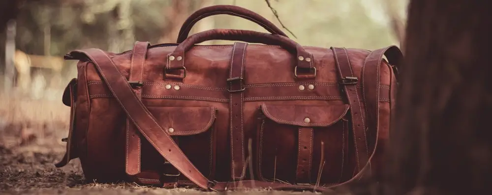

Cara Mengembalikan Bentuk Tas yang Penyok atau Lepek Akibat Pengiriman

Menerima paket dari belanja online selalu menjadi momen yang menyenangkan. Namun, terkadang ada sedikit masalah yang mengurangi kebahagiaan itu, misalnya saat tas baru yang Anda beli tiba dalam kondisi penyok, lepek, atau kempes karena tertekan selama proses pengiriman. Bentuknya yang seharusnya menggembung indah jadi gepeng dan kurang menarik.
Jangan khawatir, masalah ini sangat umum terjadi, terutama pada tas yang terbuat dari bahan kulit sintetis (PU Leather). Anda tidak perlu panik atau buru-buru mengajukan komplain. Ada cara perbaikan cepat dan sangat mudah (quick fix) yang bisa Anda lakukan sendiri di rumah hanya dengan bantuan barang-barang sederhana dan sinar matahari.
Mari kita bahas cara mengembalikan bentuk tas kesayangan Anda agar kembali sempurna.
Mengapa Tas Bisa Penyok Saat Pengiriman?
Tas, terutama yang berbahan kulit sintetis atau kanvas, memiliki sifat yang fleksibel. Ketika dikemas dan dikirim, tas sering kali dilipat atau tertekan oleh barang lain dalam waktu yang lama. Tekanan ini membuat material tas "mengingat" bentuk lipatan atau lekukan tersebut, sehingga saat dikeluarkan dari kemasan, bentuknya menjadi tidak sempurna.
Tujuan perbaikan kita adalah untuk "mereset" memori material tersebut dan mengembalikannya ke bentuk aslinya.
Solusi Cepat: Metode Isian dan Panas Matahari
Metode ini sangat efektif karena menggabungkan dua prinsip: memberikan topangan dari dalam dan menggunakan panas untuk membuat material lebih lentur.
Alat dan Bahan yang Diperlukan:
- Bahan Pengisi: Bantal kecil, boneka, handuk, syal, atau gumpalan kaus. Tujuannya adalah untuk mengisi tas hingga padat.
- Sinar Matahari: Sumber panas alami yang paling efektif.
Langkah-langkah Memperbaiki Tas:
-
Isi Tas Hingga Penuh dan Padat
Langkah pertama adalah mengisi bagian dalam tas menggunakan bahan pengisi yang sudah Anda siapkan. Pastikan Anda mengisinya hingga benar-benar penuh dan padat, dorong setiap sudut hingga tas mencapai bentuk ideal yang seharusnya. Langkah ini sangat krusial karena akan menjadi cetakan untuk bentuk baru tas Anda. -
Jemur di Bawah Sinar Matahari
Letakkan tas yang sudah terisi penuh di bawah terik sinar matahari. Panas dari matahari akan menghangatkan material tas, membuatnya menjadi lebih lunak dan lentur. Dalam kondisi ini, material akan mengikuti bentuk padat dari isian di dalamnya. Jemur selama kurang lebih 30 menit hingga 1 jam.
Peringatan: Jangan menjemur terlalu lama (lebih dari 1,5 jam) karena panas berlebih bisa merusak beberapa jenis bahan atau memudarkan warna.
-
Dinginkan dan Periksa Bentuknya
Setelah dijemur, angkat tas dan biarkan di dalam ruangan hingga suhunya kembali normal (sekitar 15-20 menit). Setelah dingin, keluarkan semua isian dari dalam tas. Seharusnya, tas Anda sudah kembali ke bentuknya yang menggembung dan sempurna.
Tips Tambahan untuk Hasil Maksimal
- Jika Masih Lepek: Apabila bentuknya belum kembali sempurna, ulangi proses pengisian dan penjemuran sekali lagi.
- Untuk Penyimpanan Jangka Lama: Agar bentuk tas tidak kembali kempes saat disimpan di lemari, selalu isi bagian dalamnya. Anda bisa menggunakan gumpalan kertas koran bekas, bubble wrap, atau dust bag yang diisi dengan isian ringan. Cara ini akan menjaga bentuk tas tetap ideal.
Video pendek di bawah akan menunjukkan cara yang sangat mudah ini, tas penyok karena pengiriman bukan lagi masalah besar. Selamat mencoba!